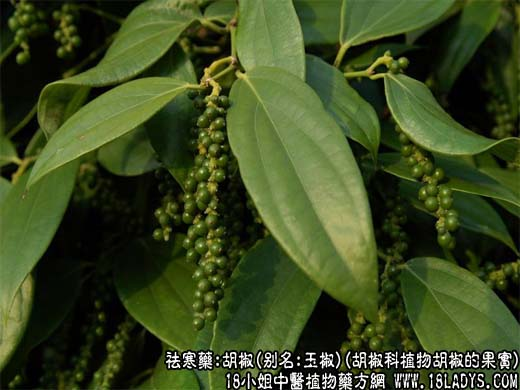
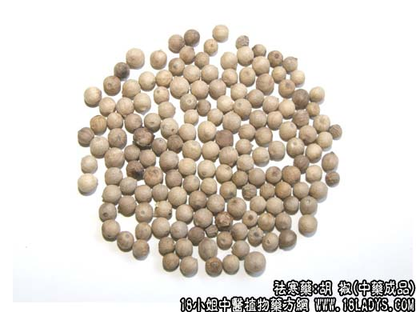
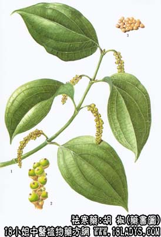

胡椒为常用中药。始载《唐本草》。
别名：玉椒、古月。
来源：为胡椒科植物胡椒的果实，多为栽培。果实成熟后除去外面黑皮，而呈灰白或黄白者即为商品中的白胡椒；其未成熟，不去黑皮的即为黑胡椒，一般多作食品供调味而不入药。药用白胡椒。
产地：主产于热带、亚热带地区。我国云南、海南岛等地亦产。
性状鉴别：白胡椒为圆球形的果实，直径3~6毫米。外皮灰白色或淡黄白色。一端有一微小的疙瘩状，凸起，另一端有一微凹陷的细小圆脐，两端间多有9~12条分布均匀的浅色线纹。质坚而脆。破开面微有粉性。外皮很薄，里面分两层，外层为灰棕色或黑色，内层为白色，中间有细小空心。气特异，并有峻烈的辛辣味。
黑胡椒为近圆球形，直径同白胡椒。表面暗棕色或灰黑色，具网状皱纹。余同白胡椒。
两者均以粒圆、个大、气味峻烈者为佳。
主要成分：含胡椒碱、胡椒脂碱、胡椒新碱，挥发油含向日葵素，二氢葛缕醇、氧化石竹烯、隐品酮。
功效与作用：升压作用和健胃作用：正常人将胡椒0.1g含于口内而不咽下，可以升高血压13.1毫米汞柱，但过10~15分钟后，又复原，对脉博无显著影响。相椒的作用与辣椒相似，但刺激性较小，内服可以作驱风健胃剂，外用可作刺激剂，发散剂，所含胡椒碱曾用解热和驱风剂。并有微弱的抗疟作用。
胡椒的水、醚或酒精提取物，在试管内对感染大鼠的整体试验中证明有杀绦虫的作用，对吸虫及线虫作用不明显。
炮制：拣净杂质，生用，捣碎。
性味：辛、热。
归经：入胃、大肠经。
功能：除阴寒、暖肠胃止痛，下气消痰。
主治：寒痰食积，脘腹冷痛，呕吐反胃，泄痢。并解食物中毒。
临床应用：胡椒辛热，纯阳之物，肠胃寒湿者宜用，热病人食之，动火伤气，阴受其害，久食气大伤，须以他药佐之为宜。
1、治小儿消化不良性腹泻：白胡椒粉与葡萄糖粉配伍成散剂服。
2、治五脏风冷，冷气心腹痛，或吐清水，胡椒粉调服。
3、据报道，胡椒对治疗肾炎，慢性气管炎喘息有效。外用：对治疗牛皮癣，湿疹，座疮过敏性皮炎有效，一般无不良反应。
使用注意：1、阴虚有痰火者忌服。
2、《海药本草》：“不宜多服，损肺。”
处方举例：1、治心下大痛：胡椒四十几粒，乳香3g。研匀，男用生姜，女用当归汤下。（《寿域神方》）。
2、治反胃及不欲饮食：制半夏、胡椒等分为细末，姜汁为丸，如梧子大。每服三、五十丸，姜汤下。（《百一选择方》）。
3、治缺钙抽搐：白胡椒20粒，鸡蛋白2个，将上药焙黄研粉，分成十四包，每日1包，每日1包，开水冲服。内蒙古（《中草药新医疗法资料选编》）。
注：（《随息居饮食谱》）：“多食动人燥液，耗气伤阴，破血坠胎，发疮损目，故孕妇及阴虚内热皆忌之。绿豆能解毒。”